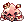
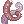

📘 Introdução & Mecânicas
O Mestre Estelar é uma classe expandida muito versátil que possui um burst de dano tremendo,
podendo usufruir da mecânica de overkill
(25% de drop em hit kill) em conteúdos end-game.
Embora muito forte, não recomendo o mesmo para ser seu primeiro personagem,
devido à sua complexidade de jogabilidade, falta de equipamentos e sustain. Para começar, é muito
mais prático começar de Desordeiro, e montar um Mestre Estelar depois de estar com recursos para sustentar seu gasto de SP.
🔼 Pontos Fortes
• Escala muito bem graças aos buffs do milagre, união e outros da classe não sendo necessário gears end-game para ter um bom desempenho.
• Classe extremamente móvel graças ao
Chute Aéreo.
• Kit de habilidades muito completo, excelente para farmar conteúdos end-game ou Instâncias como
Vila Poring ou
Caverna do Polvo.
🔻 Pontos Fracos
• Forte dependência de recarga (1s) para causar dano consistente.
• Alto consumo de sustain (xaropes, itens de drain como
 rideword).
rideword).
• Ideal ter um dual para se auto-linkar.
• Se tomar dispell, it's over. 💀
Habilidades importantes
Abaixo, algumas das habilidades das quais serão mais utilizadas em sua jogatina.
Nas seções de 📜 Habilidades,
📊 Atributos e 🛠️ Builds e Progressão,
falarei mais sobre, com detalhes.
 Eclipse Lunar
Eclipse Lunar

Habilidade inicial do combo, assim que utilizada, permite o uso de Chute Lunar.
Chute Lunar

Habilidade principal causadora do dano na build.
 Espírito do Mestre Taekwon
Espírito do Mestre Taekwon

Importante skill utilizada pelos Linkers, para poder utilizar União Solar, Lunar e Estelar.
 União Solar, Lunar e Estelar
União Solar, Lunar e Estelar

Quase que obrigatório, pois é o que torna a classe versátil para lidar com monstros que possuem esquiva alta, AgiUp de MvPs, etc.
Efeitos da União:
• Cura recebida -75%.
• Aumento da velocidade de movimento ao flutuar do chão.
• Ataques físicos ignoram a esquiva do alvo.
• Ataques físicos sempre serão críticos.
• Regeneração natural de HP e SP -100%.
• Ao realizar ataques físicos contra monstros, cada ataque drenará 2% do seu HP.
 Brisa Leve
Brisa Leve

Skill importantíssima, que permite escolher 1 dentre 7 elementos para atacar.
Milagre Solar, Lunar e Estelar

Literalmente, Milagre, é o que torna o Mestre Estelar tão forte, praticamente dobrando seu dano, pois todos os inimigos no mapa se tornam alvos estelares (efeito da percepção). Dura 1 hora e se redefine com muita frequência.
Porém, o efeito será perdido se você mudar de mapa. Deslogar/morrer não interfere.